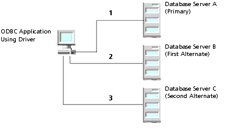

Using Connection Failover
Connection failover is a useful feature that is available in the following DataDirect Connect for ODBC drivers: DB2 Wire Protocol, Informix Wire Protocol, Oracle Wire Protocol, Oracle, SQL Server Wire Protocol (UNIX only), and Sybase Wire Protocol.
Connection failover allows an application to connect to an alternate, or backup, database server if the primary database server is unavailable, for example, because of a hardware failure or traffic overload. Connection failover ensures that the data on which your critical ODBC applications depend is always available.
You can customize the DataDirect Connect for ODBC drivers for connection failover by configuring a list of alternate database servers that are tried if the primary server is not accepting connections. Connection attempts continue until a connection is successfully established or until all the alternate database servers have been tried the specified number of times.
For example, suppose you have the environment shown in Figure 2-1 with multiple database servers: Database Server A, B, and C. Database Server A is designated as the primary database server, Database Server B is the first alternate server, and Database Server C is the second alternate server.
Figure 2-1. Connection FailoverFirst, the application attempts to connect to the primary database server, Database Server A (1). If connection failover is enabled and Database Server A fails to accept the connection, the application attempts to connect to Database Server B (2). If that connection attempt also fails, the application attempts to connect to Database Server C (3).
In this scenario, it is probable that at least one connection attempt would succeed, but if no connection attempt succeeds, the driver can retry each alternate database server (primary and alternate) for a specified number of attempts. You can specify the number of attempts that are made through the connection retry feature. You can also specify the number of seconds of delay, if any, between attempts through the connection delay feature. For more information about connection retry, see "Using Connection Retry".
A DataDirect Connect for ODBC driver fails over to the next alternate database server only if a successful connection cannot be established with the current alternate server. If the driver successfully establishes communication with a database server and the connection request is rejected by the database server because, for example, the login information is invalid, then the driver generates an error and does not try to connect to the next database server in the list. It is assumed that each alternate server is a mirror of the primary and that all authentication parameters and other related information are the same.
Connection failover provides protection for new connections only and does not preserve states for transactions or queries. For details on configuring connection failover for your driver, see the appropriate driver chapter.